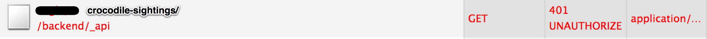

Created by Ofir Ovadia / Purple Bit LTD
Get new loot:
$http.get('/get-new-loot/').success(function(loot) {
console.log(loot);
});
Client
def get_new_loot(request): pass
Server
Get sold loot, so he can steal it again..
$http.get('/get-sold-loot/')...
Client
def get_sold_loot(request): pass
Server
Some loot is old, but still unsold..
$http.get('/get-unsold-loot/')...
Client
def get_unsold_loot(request): pass
Server
$http.get('/get-new-loot/')...
$http.get('/get-sold-loot/')...
$http.get('/get-unsold-loot/')...
$http.get('/get-expensive-loot/')...
$http.get('/get-coin-loot/')...
$http.get('/get-antique-loot/')...
$http.get('/get-loot-from-specific-date/')...
$http.get('/get-old-unsold-loot/')...
$http.get('/get-new-unsold-loot/')...
Client
def get_new_loot(request): pass
def get_sold_loot(request): pass
def get_unsold_loot(request): pass
def get_expensive_loot(request): pass
def get_coin_loot(request): pass
def get_antique_loot(request): pass
def get_loot_from_date(request): pass
def get_old_unsold_loot(request): pass
def get_new_unsold_loot(request): pass
Server
$http.get('/loot/?date_looted__gt=2013-11-19')...
$http.get('/loot/?is_sold=true')...
$http.get('/loot/?is_sold=false')...
$http.get('/loot/?price__gt=100/')...
$http.get('/loot/?type=coin/')...
$http.get('/loot/?type=antique/')...
$http.get('/loot/?date_looted=2013-11-26/')...
$http.get('/loot/?sold=false&date_looted__lte=2013-11-19')...
$http.get('/loot/?sold=false&date_looted__gt=2013-11-19')...
Client
def get_loot(request): passServer
$http.post('/loot/', {
type : 'antique',
description: 'Vase',
date_looted : 2013-11-26,
is_sold : false,
price : 136
})
Create new loot
$http.get('/loot/12/');
// Returns: {
// id : 12,
// type : 'antique',
// description: 'Vase',
// date_looted : 2013-11-26,
// is_sold : false,
// price : 136
// }
Get specific loot
$http.get('/loot/');
// Returns: [{
// id : 1,
// type : 'coin',
// description: 'Chest of coins',
// ...
// }, {
// id : 2,
// ...
// }, { ... }, ... , { ... }]
Get all loot
$http.put('/loot/12/', {
type : 'antique',
description: 'Vase',
date_looted : 2013-11-26,
is_sold : true,
price : 136
});
Update loot
$http.delete('/loot/12/');
Delete loot
Use $http object directly
// Find Peter Pan
// GET : /lost-boys/?name=Peter+Pan
$http.get('/lost-boys/', { params : {name : 'Peter Pan'} })
.then(function(lostBoys) {
var peterPan = lostBoys[0];
// Capture
peterPan.captured = true;
// PUT: /lost-boys/7 (Assuming peterPan.id = 7)
return $http.put('/lost-boys/' + peterPan.id, peterPan);
}).then(function(peterPan) {
// Kill
return $http.delete('/lost-boys/' + peterPan.id); // DELETE: /lost-boys/7
});
var LostBoys = $resource('/lost-boys/:boyId', { boyId : '@id' });
// Find Peter Pan
// GET : /lost-boys/?name=Peter+Pan
LostBoys.query({name : 'Peter Pan'}, function(lostBoys) {
var peterPan = lostBoys[0];
// Capture
peterPan.captured = true;
peterPan.$save(function(peterPan) { // PUT: /lost-boys/7
// Kill
peterPan.$delete(); // DELETE: /lost-boys/7
});
});
var lostBoys = Restangular.all('lost-boys');
// Find Peter Pan
// GET : /lost-boys/?name=Peter+Pan
lostBoys.getList({name : 'Peter Pan'}).then(function(lostBoys) {
var peterPan = lostBoys[0];
// Capture
peterPan.captured = true;
return peterPan.put(); // PUT: /lost-boys/7
}).then(function(peterPan) {
// Kill
peterPan.remove(); // DELETE: /lost-boys/7
});
if (/* Logged In */) {
Restangular.getList('/crocodile-sightings/').then(function(sightings) {
// Flee?
});
} else {
// Show log in dialog.
}
if (/* Logged In */) {
Restangular.getList('/crocodile-sightings/').then(function(sightings) { ... });
} else {
// Show log in dialog.
}
// ...
Restangular.getList('/hooks/').then(function(hooks) { ... });
// ...
if (/* Logged In */) {
Restangular.getList('/ships/').then(function(ships) { ... });
} else {
// Show log in dialog.
}
// ...
if (/* Logged In */) {
Restangular.getList('/loot/').then(function(loot) { ... });
} else {
// Show log in dialog.
}
logInRequired(function () {
Restangular.getList('/crocodile-sightings/').then(function(sightings) { ... });
});
// ...
Restangular.getList('/hooks/').then(function(hooks) { ... });
// ...
logInRequired(function () {
Restangular.getList('/ships/').then(function(ships) { ... });
});
// ...
logInRequired(function () {
Restangular.getList('/loot/').then(function(loot) { ... });
});
Restangular.getList('/crocodile-sightings/').then(function(sightings) { ... });
// ...
Restangular.getList('/hooks/').then(function(hooks) { ... });
// ...
Restangular.getList('/ships/').then(function(ships) { ... });
// ...
Restangular.getList('/loot/').then(function(loot) { ... });
Based on AngularJS HTTP Auth Interceptor Module
Write your code as usual
Restangular.getList('/crocodile-sightings/').then(function(sightings) { ... });
// ...
Restangular.getList('/hooks/').then(function(hooks) { ... });
// ...
Restangular.getList('/ships/').then(function(ships) { ... });
// ...
Restangular.getList('/loot/').then(function(loot) { ... });
Based on AngularJS HTTP Auth Interceptor Module
Restangular.getList('/crocodile-sightings/').then(function(sightings) { ... });
Got a 401?
Based on AngularJS HTTP Auth Interceptor Module
Store the request
var failedRequests = [];
failedRequests.push(request); // request = Restangular.getList('/crocodile-sightings/')
Based on AngularJS HTTP Auth Interceptor Module
Show the Log In screen
Based on AngularJS HTTP Auth Interceptor Module
Retransmit requests
retransmit(failedRequests);
Restangular.getList('/crocodile-sightings/').then(function(sightings) { ... });
Original flow of program continues
Controller 1
// GET : /hooks/
Restangular.all("hooks").getList().then(function(hooks) {
// Do something with hooks...
});
Controller 2
// GET : /hooks/
Restangular.all("hooks").getList().then(function(hooks) {
// Do something else with hooks...
});
angular.module('app', ['restangulat'])
.config(['RestangularProvider', function(RestangularProvider) {
...
RestangularProvider.setDefaultHttpFields({cache: true});
...
}
]);
(Implemented in AngularJS's level)
Controller 1
// GET: /hooks/
Restangular.all("hooks").getList().then(function(hooks) {
// Got: [{ id : 3, ... }, { id : 7, ... }, { id : 12, ... }, ...]
// Do something with all hooks...
});
Controller 2
// GET: /hooks/12/
Restangular.one("hooks", 12).get().then(function(hook) {
// Got: { id : 12, ... }
// Take a really close look at hook #12...
});
Roll your own service
angular.module('app').factory(
'hooksService', ['Restangular', '$q' function(Restangular, $q) {
var hooksCache = {},
hooksService = {};
hooksService.getHook = function(id) {
if (/* id in hooksCache */) {
var deferred = $q.defer();
deferred.resolve(/* hooksCache(id) */);
return deferred.promise;
} else {
return Restangular.one('hooks', id).then(function(hook) {
// Store hook in hooksCache.
return hook;
});
}
};
return hooksService;
}
]);
// GET: /hooks/12/
Restangular.one("hooks", 12).get().then(function(hook) {
// Got: { id : 12, ... }
// Take a really close look at hook #12...
});
Use callbacks instead of promises
angular.module('app').factory(
'hooksService', ['Restangular', '$q' function(Restangular, $q) {
var hooksCache = {},
hooksService = {};
hooksService.getHook = function(id, callback) {
if (/* id in hooksCache */) {
callback(/* hooksCache(id) */);
}
// Call server anyway.
return Restangular.one('hooks', id).then(function(hook) {
callback(hook);
return hook;
});
};
return hooksService;
}
]);
For source code, email hook@purplebit.com